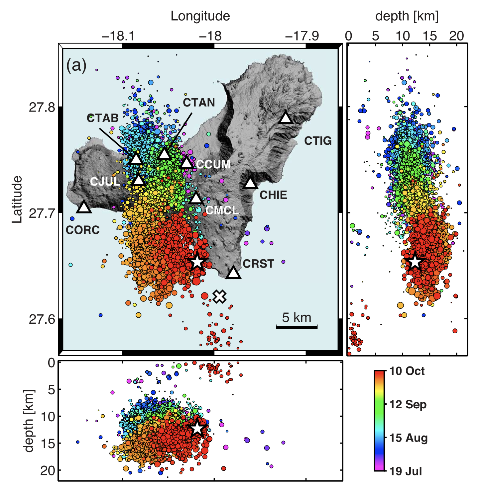

El Hierro
We use a dataset of locations and P- and S-wave arrival times from earthquakes preceeding the eruption of 2011-2012.
The dataset begins on 2011-07-21 and ends on 2011-10-09 (beginning of the eruption). It contains 31,641 earthquakes and has been obtained by reprocessing the original IGN data (Eduardo Díaz Suárez, eadiaz@mitma.es, personal communication).
The following figure shows the distribution of the pre-eruption seismicity, and the location of the seismic stations from the IGN network (López et al., 2012).

Results are in /lustre/ific.uv.es/ml/ific033/phaseDetection/phasenet/output.good
File format is: picks_STA.JJJ.csv
fname,itp,tp_prob,its,ts_prob
/lustre/ific.uv.es/ml/ific033/phaseDetection/phasenet/demo/Hierro/ES.CTAB.330_0,[],[],[],[]
/lustre/ific.uv.es/ml/ific033/phaseDetection/phasenet/demo/Hierro/ES.CTAB.330_3000,[],[],[],[]
/lustre/ific.uv.es/ml/ific033/phaseDetection/phasenet/demo/Hierro/ES.CTAB.330_6000,[],[],[],[]
/lustre/ific.uv.es/ml/ific033/phaseDetection/phasenet/demo/Hierro/ES.CTAB.330_9000,[],[],[],[]
/lustre/ific.uv.es/ml/ific033/phaseDetection/phasenet/demo/Hierro/ES.CTAB.330_12000,[],[],[],[]
/lustre/ific.uv.es/ml/ific033/phaseDetection/phasenet/demo/Hierro/ES.CTAB.330_15000,[],[],[],[]
/lustre/ific.uv.es/ml/ific033/phaseDetection/phasenet/demo/Hierro/ES.CTAB.330_18000,[],[],[],[]
/lustre/ific.uv.es/ml/ific033/phaseDetection/phasenet/demo/Hierro/ES.CTAB.330_21000,[],[],[],[]
/lustre/ific.uv.es/ml/ific033/phaseDetection/phasenet/demo/Hierro/ES.CTAB.330_24000,[],[],[],[]
/lustre/ific.uv.es/ml/ific033/phaseDetection/phasenet/demo/Hierro/ES.CTAB.330_27000,[],[],[],[]
/lustre/ific.uv.es/ml/ific033/phaseDetection/phasenet/demo/Hierro/ES.CTAB.330_30000,[],[],[],[]
/lustre/ific.uv.es/ml/ific033/phaseDetection/phasenet/demo/Hierro/ES.CTAB.330_33000,[],[],[],[]
/lustre/ific.uv.es/ml/ific033/phaseDetection/phasenet/demo/Hierro/ES.CTAB.330_36000,[],[],[113],[0.340271]
/lustre/ific.uv.es/ml/ific033/phaseDetection/phasenet/demo/Hierro/ES.CTAB.330_39000,[],[],[],[]
López, C., Blanco, M. J., Abella, R., et al. (2012). Monitoring the volcanic unrest of El Hierro (Canary Islands) before the onset of the 2011–2012 submarine eruption. Geophysical Research Letters, 39(13), L13303, doi:10.1029/2012GL051846.